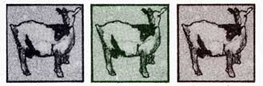
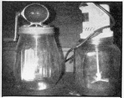
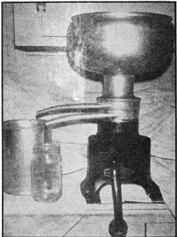
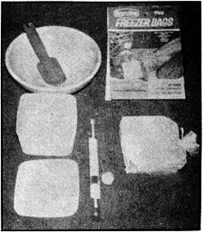

Butter made from goat milk is every bit as good as the same spread made from cow's milk. "As good as", please note. . . not "just like".
For one thing, goat butter has a lower melting point other cow butter . . . possibly because the milk from which it comes contains a higher proportion of unsaturated fatty acids. It's also pure white (unless a butter color is added before churning). The reason is that Nanny-a more efficient machine than a cow-has already converted all the carotene in her product to vitamin A.
Another difference: It's a little more difficult to obtain cream from goat milk because the buttermilk globules are very small . . . partially homogenized, you might say. Thus the rich layer rises more slowly than the larger fat particles in cow milk. In fact, the process may take several days (and you'll have a storage problem to cope with meanwhile).
This problem, of course, can be solved with a create separator right after milking, while the liquid is still warm. The catch is that it's not easy to find such a device these days except as a lucky find, secondhand, in some out-of-the-way place. (Unfortunately, the De Laval Separator Company-one of the last firms to make small hand-operated and electric models in North America-has discontinued the line and I know of no other source for new cream separators except one yet-unproven company recently located in India by Countryside magazine.-MOTHER.)
Apart from cream, here's what you need to make goat butter: a dairy thermometer or other instrument with a range of 50° to 150° F, a small glass churn . . . either hand or electric, butter color if desired, and a double boiler (or a pan of convenient size set into a larger pot of water).
Prepare for buttermaking by letting your cream stand at room temperature overnight-or about 12 hours-so that the butterfat globules will ripen. Add a few drops of coloring at this point if you want the finished product to be yellow.
Next, heat the cream in the double boiler to 146°, give or take a degree or two. Use a thermometer . . . don't guess, is soon as you obtain the correct reading, set the top pan in cold water and cool the contents to 52°-60° F in summer (58°-66° in winter).
The liquid can then be poured into the churn (fill it only half full) and agitation started. If your temperature is correct, butter should "come" in 30 to 40 minutes. Cream that's too cold will take longer to make up and will give you a hard spread which is difficult to work. If the fluid's too warm, rite churning will be incomplete and will yield a soft, greasy from which you won't be able to wash the buttermilk.
Your work is finished when the butterfat has gathered up in granules the size of a pea. (You'll also notice a change in the sound of the dasher.) Pour off the buttermilk through the holes in the top of the churn (they also allow gases to escape), Be sure to save the liquid!
Next, fill the churn with water of the same temperature as the new-made butter. (Too much warmth will melt the fat, and a cold bath will harden it and make it difficult to knead.) Give the handle a few gentle turns and pour off the washing fluid. Repeat this operation two or three times until the rinse water runs clear.
Finally, spread the butter in a shallow pan or wooden bowl and add salt if you like . . . 3/4 ounce to the pound, or as much as tastes good to you. Work the mass by pressing it with a spoon or plastic spatula. Fold the butter over and press again. Continue in this manner until no more water seeps out under pressure. You're then ready to form your spread into any desired shape. I mold mine in covered pint-sized plastic containers that are available at reasonabie prices from any supermarket or dime store.
Remember that your homemade goat butter contains no preservatives and must be kept in the refrigerator when you aren't using it. If left out at room temperature it will melt or become rancid.
Nevertheless, don't hesitate to make lots of this delicious natural food when you have a surplus of milk. I've kept butter frozen for six months or more, and when I thawed and used the spread it was just like fresh-made. I suggest packing and freezing your churn's output in plastic tubs and transferring it, still frozen, to pint Kordite freezer bags. The resulting square packages are easy to stack in the coldstorage unit.
If the buttermaking method I've outlined sounds like too much work or, involves too much equipment, there are alternatives . . . usually less satisfactory, it's true, but experimentation is part of the fun of "doing it yourself". For example, butter can be made in a mixer, or a pint of cream can be shaken in a quart fruit jar until the fat solidifies. My recommendations about churning temperature also hold true for these procedures. Incidentally, it is possible to churn whole milk . . . but you must use a large amount of raw material for a very small return.
That's about it. Experiment, have fun, and enjoy your own delicious, nutritious, natural goat butter.
[1] Milk itself, and all the utensils you use in its storage and processing, must be absolutely clean. Remember that this "perfect food" is ideal nourishment for bacteria too.
[2] Never cover warm goat milk when you put it in the refrigerator, because the resulting condensation can affect the taste. Place a lid on the container only after its contents are cold. It follows that you must cover all strong-smelling fruits and vegetables-onions, canteloupes, etc.-that are being stored at the same time, or the milk may pick up the odors and develop an "off" flavor.
[3] Skimmed goat milk is very tasty and contains all the original nutrients except most of the butterfat. If you eat the butter and drink the buttermilk that's left after churning, you'll be getting all the goodness your milch doe has to offer. (If you don't like buttermilk, incidentally, your chickens will.)
|
 small churns may be run either by hand or with electricity |
 if you do get hold of a table separator, you'll need to bolt it down to a firm surface because the machine uses centrifugal force to spin the cream out of the milk. Mine is permanently fastened to the kitchen counter top. |
 a dairy thermometer (center) is a ""must"" for buttermaking. |
|
 |
|
|